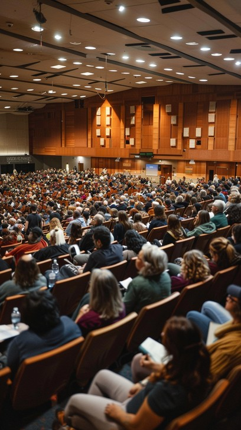
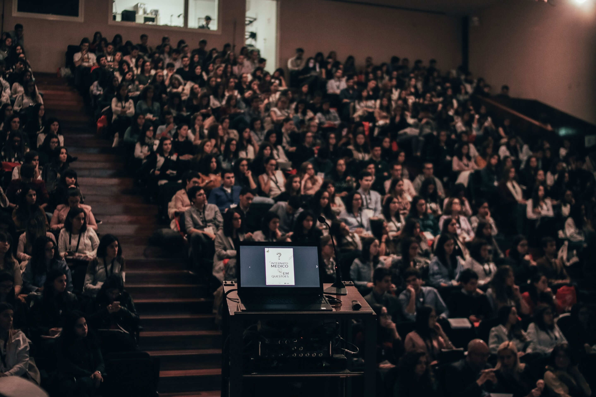

Seminar Teknologi Informasi Bekali Mahasiswa Hadapi Dunia Kerja Digital
Penulis : Fathar Sabil Abdullah
Terbit : Minggu, 4 Oktober 2026

Isi berita - Seminar bertema "Persiapan Karier di Era Digital" digelar di Aula Utama Universitas Teknologi Nusantara, Kuala Lumpur, Malaysia, pada Sabtu, 3 Oktober 2026. Kegiatan yang diselenggarakan oleh Himpunan Mahasiswa Teknik Informatika ini diikuti sekitar 150 mahasiswa dari berbagai program studi dan negara. Acara dibuka oleh Ketua Program Studi yang menekankan bahwa penguasaan teknologi menjadi bekal penting sebelum memasuki dunia kerja global.
Isi berita - Pada sesi utama, Rina Maharani, praktisi pengembang perangkat lunak, memaparkan keterampilan yang paling dicari perusahaan saat ini, seperti berpikir kritis, kerja sama tim, dan kemampuan menggunakan perangkat digital. Peserta juga berkesempatan berdiskusi langsung dalam sesi tanya jawab. Panitia berharap kegiatan ini memotivasi mahasiswa untuk terus mengembangkan diri dan aktif mengikuti kegiatan serupa.
Dokumentasi Berita
